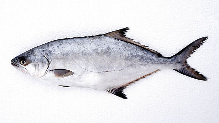

Lichia amia (Λίτσα)

Η λίτσα (Lichia amia) είναι μεγάλο, ταχύτατο αρπακτικό ψάρι της οικογένειας Carangidae, που συναντάται και στις ελληνικές θάλασσες.
Μορφολογία
Έχει πολύ πλατύ και πλευρικά συμπιεσμένο σώμα, με σχετικά μικρό κεφάλι αλλά πολύ μεγάλο στόμα, ψηλή ράχη και έντονα διχαλωτή ουρά. Τα ενήλικα μπορεί να φτάσουν μέχρι 2 m και περίπου 50–70 kg, αν και πιο συχνά αλιεύονται γύρω στο 1 m, με ασημογκρι χρωματισμό, σκοτεινότερη ράχη και χαρακτηριστική καμπύλη (σχήμα U) της πλευρικής γραμμής.
Πού τη συναντάμε
Η λίτσα είναι παράκτιο–πελαγικό είδος που ζει κυρίως σε βάθη έως 40–50 m, πλησιάζοντας συχνά ακτές, στόμια ποταμών και υφάλμυρα νερά, όπου κυνηγά κοπαδάκια ψαριών. Η εξάπλωσή της καλύπτει όλη σχεδόν τη Μεσόγειο και τον ανατολικό Ατλαντικό, με παρουσία σε περιοχές με θερμά, καλά οξυγονωμένα παράκτια νερά.
Διατροφή
Η λίτσα είναι καθαρά ιχθυοφάγο αρπακτικό, που τρέφεται κυρίως με κέφαλους, γοβιούς και άλλα μικρομεσαία ψάρια, ενώ δευτερευόντως καταναλώνει γαρίδες και άλλα καρκινοειδή. Τα νεαρά άτομα χρησιμοποιούν εκβολές και λιμνοθάλασσες σαν «νηπιαγωγεία», όπου κυνηγούν μικρά ψάρια σε κοπάδια, πριν μετακινηθούν σε περισσότερο ανοικτά παράκτια νερά ως ενήλικα.
Συνθήκες εκτροφής
Η λίτσα θεωρείται είδος με εμπορική αξία για αλιεία και έχει αναφερθεί σε μελέτες ως στόχος παράκτιων ιχθυοκαλλιεργειών, κυρίως σε λιμνοθάλασσες και εκβολικά συστήματα όπου εγκλωβίζεται φυσικά. Για μακροχρόνια διατήρηση σε αιχμαλωσία θα απαιτούνταν μεγάλες, καλά οξυγονωμένες δεξαμενές με χώρο για συνεχή κολύμβηση, ποιοτική ιχθυοτροφή πλούσια σε πρωτεΐνη και χαμηλό στρες, όμως οργανωμένα πρωτόκολλα εκτροφής για Lichia amia είναι ακόμη περιορισμένα σε σχέση με άλλα μεσογειακά είδη.